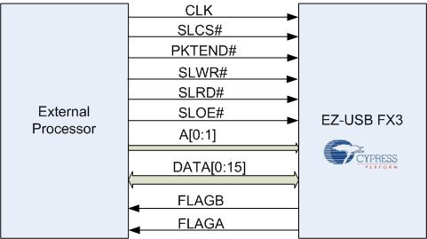
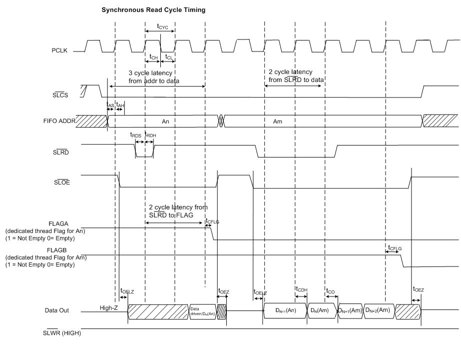
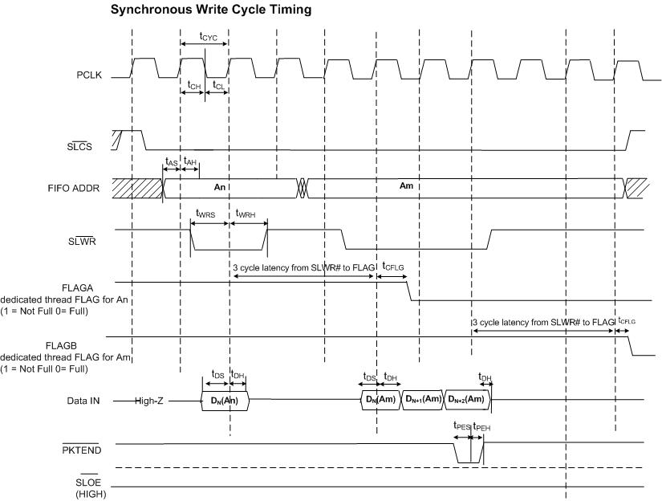
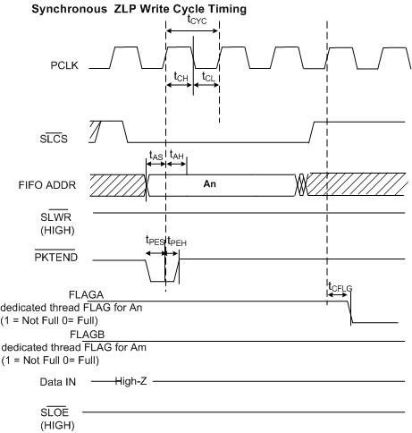

Introduction
One of the key features of EZ-USB® FX3™ is the flexibility and programmability of the General Programmable Interface (GPIF™II). GPIF™II is a programmable state machine that enables a flexible interface to adapt to any processor interface required by the user. GPIF™II state machine is defined by a set of programmable registers. These registers are to be configured by the firmware application running on FX3. The register configuration that programs GPIF™II for a specific interface can be generated by the software tool GPIF™II Designer. This document provides details on how to generate and use Synchronous Slave FIFO Interface on GPIF™II using the tool.
Synchronous Slave FIFO Interface
Feature Highlights

Figure 1. Synchronous Slave FIFO Interface Diagram
Synchronous Slave FIFO interface is ideal for applications where an external processor or device needs to perform data read/write accesses to FX3's internal FIFO buffers. Figure 1 shows the interface diagram for the Synchronous Slave FIFO interface. The Synchronous Slave FIFO interface provides the external processor (which acts as Master initiating the transfer) a data path to the USB port. The data path can be created to any of the FX3 peripherals as well. The external processor can view the FX3 port as FIFO that can be accessed through single cycle or burst.
EZ-USB® FX3™ provides up to four physical threads for data transfer over GPIF II. At a time, any one socket may be mapped to a thread. The sockets that are to be used must be mapped to a thread in the firmware. The addressing mode can be a pre selected thread or a dynamically selected thread through the two bits of the address bus. The external processor can control the data path access depending on the traffic using the DMA flags provided by FX3. A flag indicate the status of a particular socket connected to a thread. The two flags namely FLAGA & FLAGB indicate empty/full/partial conditions of the associated socket of the thread.
Programming GPIF™II as Synchronous Slave FIFO
The set of register values that programs the GPIF™II interface as Synchronous Slave FIFO can be generated using GPIF™II Designer. GPIF™II Designer generates a "C" header file containing data structures supported the FX3 firmware framework API. The software tool GPIF™II Designer and the firmware framework library are part of the EZ-USB® FX3™ Software Development Kit. A step by step procedure to use GPIF™II Designer to configure FX3 as Synchronous FIFO is as follows
Configurable Parameters
Following parameters of the interface can be modified to suite the target environment.
To make changes, open the sync_slave_fifo using GPIF™II Designer as mentioned in step 1.
The configurable parameters and available options are provided on the left side of the Customization Tab.
FX3 peripherals used: SPI, UART,I2C,I2S can be selected.
Data bus width: Data bus width of GPIF II can be 8 Bit, 16 Bit or 32 Bit. 32 Bit data bus width is not supported if SPI is selected.
Endianess: Endianness can be BigEndian or LittleEndian.
FLAGA / FLAGB connected: Flags indicate the status of the socket connected to thread. Flags can be selected from a dedicated thread or current thread selected.
By default CY_U3P_PIB_SOCKET_0 is connected to Thread 0, CY_U3P_PIB_SOCKET_1 is connected to Thread 1, CY_U3P_PIB_SOCKET_2 is connected to Thread 2 and CY_U3P_PIB_SOCKET_3 is connected to Thread 3. The socket number can be changed using the in the firmware using API CyU3PGpifSocketConfigure.
Pin mapping: Mapping of the interface signals (SLCS#, SLWR#, SLRD# and PKEND#) to the FX3 pin connections can be modified. To modify the pin mapping click on the control pins on the EZ-USB® FX3™ block on the Pin diagram appearing on the customization tab. The drop down menu shows available pins that can be mapped.
Note: To swap pins currently allocated pin must be freed. A pin can be freed by allocating to any other available pin temporarily.
Interface Description & Timing
The Synchronous Slave FIFO provides three different type of accesses.
Read
The Read accesses can be single cycle access or burst access. Figure 2 shows the timing and sequence for Asynchronous Slave FIFO read accesses.
Note that register accesses cannot be performed over the Slave FIFO interface.

Figure 2 Timing Diagram - Synchronous Slave FIFO READ
In the above diagram, data N is the first valid data read from the FIFO. To have data on the FIFO data bus, SLOE# must also be asserted. For burst mode, the SLRD# and SLOE# are left asserted during the entire duration of the read. When SLOE# is asserted, the data bus is driven (with data from the previously addressed FIFO). For each subsequent rising edge of PCLK, while the SLRD# is asserted, the FIFO pointer is incremented and the next data value is placed on the data bus.
Write
The Write accesses can be single cycle access or burst access. Figure 3 shows the timing and sequence for Synchronous Slave FIFO write accesses. Note that register accesses cannot be performed over the Slave FIFO interface.

Figure 3 Timing Diagram - Synchronous Slave FIFO WRITE
The same sequence of events as shown in a burst read is shown for a burst write. In burst write mode, SLWR# de-assertion, the data is written to the FIFO and then the FIFO pointer is incremented. A short packet can be committed to the USB host by using PKTEND#. Application processor connected should assert PKTEND# along with last word of data and SLWR# pulse corresponding to the last word. The FIFO ADDR lines should be constant during the PKTEND# assertion.
Zero Length Packet
A zero length packet can be committed to the USB host by using PKTEND#. Application processor connected should assert PKTEND#

Figure 4 Timing Diagram - Synchronous Slave FIFO Zero Length Packet
Summary
The data presented here is indicative only and must not be seen as a substitute for the full specification from which it is drawn. Please visit Cypress EZ-USB® FX3™ website for detailed and latest Datasheet.
Notice of Disclaimer
© Cypress Semiconductor Corporation, 2012. The information contained herein is subject to change without notice. Cypress Semiconductor Corporation assumes no responsibility for the use of any circuitry other than circuitry embodied in a Cypress Semiconductor product. Nor does it convey or imply any license under patent or other rights. Cypress Semiconductor does not authorize its products for use as critical components in life-support systems where a malfunction or failure may reasonably be expected to result in significant injury to the user. The inclusion of Cypress Semiconductor products in life-support systems application implies that the manufacturer assumes all risk of such use and in doing so indemnifies Cypress Semiconductor against all charges.